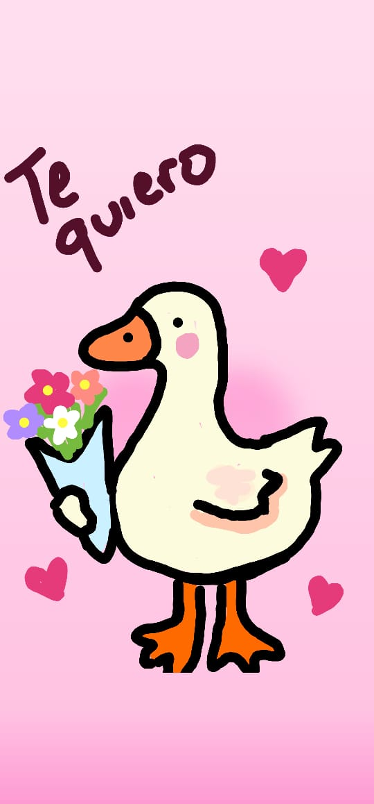

Te Admiro

Admiro lo que eres, lo que has construido. Admiro la perseverancia que tienes en la vida frente a todos los obstáculos. Admiro que no te dejas intimidar aunque las cosas parezcan complicadas.
Admiro la manera en que planeas y llevas a cabo tus objetivos. Admiro como eres con el resto de personas y cómo siempre tratas de ayudar y estar ahi para prestar tu apoyo. No hay día en que no me sorprenda de la persona que eres, y no hay noche que no anhele formar parte de eso que estas construyendo. Deseo estar ahí cuando cumplas tus metas. Deseo estar ahí cuando vivas tus momentos más felices pero también acompañarte en los más tristes. Admiro que cómo persona siempre tratas de dar lo mejor de ti en cada momento, y eso es algo que me motiva, no solo a mejorar en lo individual sino también en lo conjunto. A tu lado me siento muy completo, muy fuerte y seguro, admiro la confianza que me das y lo mucho que tu presencia genera en mi a pesar de la distancia. Te admiré desde el primer momento, y te admiraré hasta el final. Gracias por tu compañía, gracias por tu entrega, gracias por ser ese motorcito hermoso que le pone energía a mi vida. Gracias, muchas gracias por ser tan admirable. ¡Te quiero montones!